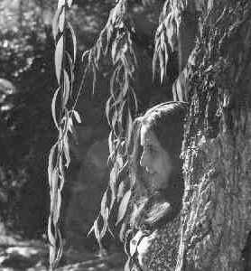
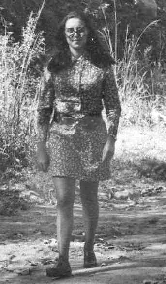

De mí
De mí
por Victoria Servidio (Argentina) |
---
¡Nuevo!
sigue mis pasos me agazapa en cada esquina eclosiona al atardecer circunda la noche enmascara luces encasilla las sombras estalla en alaridos tu presencia tu presencia de mis ríos sin rozar el agua de tu fuente gota que cae fútil castidad de virgen tu presencia y no crecen los trazos.
|
 |
 |
DE MI
Pentagrama de palabras donde surgen los arpegios primitivos del sentir…
emociones sin disfraces, los porqué, los cuándo, y hasta cuándo…
deseos clausurados, dolor calcificado…
regresar, retomar el rumbo por los ripios de la realidad que lastima a cada paso…
vociferar ante la injuria, reclamar un mundo más humano…
claudicar ante el cansancio suplicando el ANDANTE CANTABILE del sosiego…
proclamar al amor como el leit motiv de estar vivos….
al final refugiarse en la poesía, resguardada humildemente en las fauces
del silencio….
De la autora
Dedicado a mi hija María Julia
A mis padres
Y poetas amigos.
 A pesar
A pesar
A pesar de todo
a pesar de cuánto
a pesar de cómo
es un deleite gastar la vida.
Me brindó la dicha en la frescura
y la inocencia de los tiernos años
perpetuó mi esencia en el sabor del hijo
me regaló los versos, la gracia de amar.
Canalizó mis furias en sabia resistencia
edificó en mi espíritu la fortaleza
y siempre me ofrendó
una primavera nueva.
Al llegar la hora de la fatiga
a pesar de todo
a pesar de tanto
no reclamaré nada
partiré tranquila
con la paz inundando mis manos.
. . .
Reservados todos los derechos de autor.
Reseña curricular de la autora:
Victoria Servidio nacida en Cosquín Córdoba el12 de abril de 1947
Médica cirujana. UNC. Especialidad ginecoobstetricia.
libros editados
“Moradas” Narvaja Editor 2006 córdoba
“ Armas del poeta” Narvaja Editor 2008. Córdoba
Secretaria general revista Decires letras arte cultura Cosquín. Córdoba
coordinadora editorial revista Decires.
libros no editados
El colador de los tiempos: cuentos.
De musas lamentos y escrituras: prosa poética y poesía.
Palabras a mi hija: prosa.
Asistentes a eventos culturales en su ciudad y en otras ciudades del país como expositora, presentando sus libros y revista Decires.
TTTTTTTTTTTTTTTTTTTTTT
lustraciones fotos de Juventud, río Cosquín
Libro editado por Editorial Del Copista .diciembre 20011.Córdoba
Impreso en argentina ISBN 978.987.563.334-6LEY 11.723.
*La musicalización de esta página es gentileza de Péter Bustamante y su piano mágico.http://www.peterbustamante.com